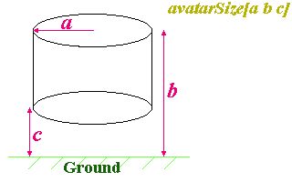

| Apártate, Que Yo Conduzco |
Muy bien, antes de meternos con la animación, hay un nodo que he prometido cubrir antes de que sea demasiado tarde. Este es NavigationInfo, y puedes usarlo para cambiar el modo en que el usuario experimente tu escenario. Te permite personalizar varios parámetros del navegador relativos al usuario. Muchos navegadores permiten que el propio usuario los cambie, pero puedes decirle como debe dejarlos al entrar en tu escena. La definición es tal como sigue:
NavigationInfo {
eventIn SFBool set_bind
exposedField MFFloat avatarSize [0.25, 1.6, 0.75]
exposedField SFBool headlight TRUE
exposedField SFFloat speed 1.0
exposedField MFString type "WALK"
exposedField SFFloat visibilityLimit 0.0
eventOut SFBool isBound
}El nodo tiene dos eventos, set_bind y isBound. Esto es así por que se trata de un nodo bindable. Esto es, en cualquier caso, algo que cubriremos posteriormente, en su propio capítulo. Por ahora, simplemente, ignoralos. El nodo es un nodo de raiz, de modo que puede ir en la cabeza de la jerarquía del grafo de la escena, de un nodo children, y así. Si tienes varios en un mismo archivo, sólo uno podrá estar ligado en un momento dado (pero, una vez más, esto lo veremos más tarde). De momento, sólo uno por archivo. Luego nos meteremos con material avanzado.
Las cosas que puedes manipular están representadas por los campos de nodo. El primero que veremos es headlight. El usuario puede cambiarlo, pero tu puedes especificar el que esté por defecto. Si no especificas lo contrario, un archivo VRML tiene por defecto su valor a ON, lo cual es útil para escenas sin iluminar. Pero, en mundos elaboradamente iluminados, resulta innecesario e irritante. Así que puedes apagarla poniendola a FALSE en tu nodo NavigationInfo. Puedes especificar además un límite de visivilidad (visibilityLimit) a tu mundo. Esta es la distancia desde el usuario tras la cual nada será dibujado en pantalla. Puedes usarlo para aumentar la velocidad de ejecución en escenarios muy grandes. Si está determinado a 0 0 0 (tal y como viene por defecto), no habrá limite de visibilidad. El siguiente campo es speed. Es un multiplicador que el navegador usa para determinar la velocidad del usuario mientras se mueve. Como algunos navegadores pemiten velocidades variables, esto es una indicación al navegador para indicar cuán rápido puede moverse el usuario. Un valor de 3.0 permitirá al usuario moverse tres veces más rápido de lo normal. Una velocidad de 0.5 dividirá su velocidad.
el campo type es el que determina como se mueve el uusuario a través de tu mundo. El campo campo puede tomar diferentes valores. Estos son:
La elección del tipo de navegación da una gran flexibilidad en cómo puede usarse el VRML. Con el campo a WALK o FLY, podrás tener la clásica senscaión de mundo virtual. Con EXAMINE podrás tener un modelo de un coche u otro producto, de manera que pueda examinarse fácilemente. Finalmente, con NONE, podrás poner al usuario a mirar lo que pones en frente suya. Puede ser usada para películas 3D, animaciones, o anuncios. El logo de la página principal del tutorial usa este modo de interacción.
Lo último que tenemos que tratar es el campo avatarSize. Te permite determinar el espacio físico de la presencia del usuario (o avatar) en el mundo. Tiene tres valores de escala. Estos representan, en orden, al avatar:
El avatar se trata como una forma cilindrica para la detección de las colisiones. El cilindro tiene unas proporciones tal y como se muestra en el diagrama inferior:
El radio y la altura total son bastante evidentes, pero la altura de las rodillas requiere una pequeña explicación. Cuando el usuario está en modo WALK, puede subir y bajar escaleras, pero sus pasos estarán condicionados por la altura de sus rodillas. El avatar sólo podrá subir escalones de altura inferior a la de sus rodillas. Esto te permite crear escalones adecuados, mientras siguen existiendo muros que el usuario no puede escalar.